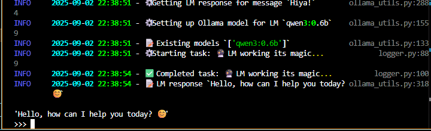
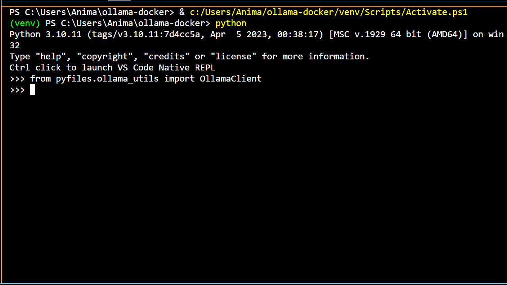

Ollama with Docker and Python⚓︎


TL;DR
Learn how to chat with LMs on your local machine . Then, you can use this setup as a base to power locally run AI agents .
About This Project⚓︎
In this tutorial, we're going to setup an Ollama server in Docker for chatting with LMs on our local machines using the Ollama Python library.
The code we learn and use here will serve as a foundation for building AI agents, showcasing how to connect to an LM and invoke responses . This is how we'll power the decision making and response generating processes of our agents . For a general overview of what we're going to do with these agents, checkout the next series of tutorials.
As previously mentioned, the way we're going to build agents is by first building local servers for all the gadgets that our agents will need . Then, we can learn how to pass these gadgets over to our agents with LangChain and LangGraph.
To kick off the tutorials, we'll start with the most fundamental server that we'll need to pass to our agents, without which our agents are basically powered off : the LM server .
As for the software to host the LM, I like using Ollama. It's insanely easy to setup and get started chatting right out of the box (as we'll see next) and it plays nicely with all the other libraries that we'll be using .
Some alternatives that I've found for chatting with LMs are LM Studio, Open WebUI, and Huggingface Transformers. There was a time when one could chat with really large LLMs like Qwen3 235B for free using Huggingface's HuggingChat. Thanks for all your help my ephemeral friend .
Now, let's get building !
Getting Started⚓︎
First, we're going to setup and build the repo to make sure that it works . Then, we can play around with the code and learn more about it .
Check out all the source code here .
Toggle for visual instructions
This is currently under construction.
To setup and build the repo follow these steps:
-
Make sure Docker is installed and running.
-
Clone the repo, head there, then create a Python environment:
-
Activate the Python environment:
-
Install the necessary Python libraries:
-
Choose to run the LM on GPU or CPU, then build and run the Docker container:
Getting an LM response can be run on your GPU or CPU. Using the GPU will generally be faster , but not all GPUs will be compatible. Also, you may not be able to run certain models regardless of whether you use GPU or CPU.
After successfully completing this step, the Ollama server should be running on http://localhost:11434. For me, when everything is setup correctly and I click the URL link, I get a page that says
Ollama is running. -
Run the test script to ensure the default LM (Qwen3 0.6B) can be invoked:
From the Docker setup, all Ollama data (including models) will be located in the local folder
./ollama_data/. All logs from the test script are output in the console and stored in the./ollama-docker.logfile. -
When you're done, stop the Docker containers and cleanup with:
Example Use Cases⚓︎
Now that the repo is built and working, let's play around with the code a bit .
Right now, we're only setting up an Ollama server to chat with an LM. That means we're only going to be using one method, namely something that gets an LM response for a given user message. To get our own chat going, all we need to do is initialize the class that holds this method, then we can send messages and get responses as we please .
The main class to interact with an LM is the OllamaClient class of the ./ollama_utils.py file which is built on the Ollama Python library. Once this class is initialized, the get_response method can be used to get an LM response for a given user message.
To facilitate interactions with the LM, the get_response method can be executed in the command line or in Python scripts . However, in later tutorials we'll implement Gradio web UIs so that we can easily chat with our agents in an intuitive way. For now, we can see how to interact with LMs through these less intutive ways .
To start off, let's interact with an LM through the command line .
Chatting with an LM through the Command Line⚓︎
Toggle for visual instructions
This is currently under construction.
To chat with an LM, follow these steps:
-
Do step 3 then step 5 of the
Getting Startedsection to activate the Python environment and run the Ollama server in Docker. -
Call the Python environment to the command line:
-
Now that you're in the Python environment, import the OllamaClient class:
-
Initialize the OllamaClient class:
-
Define a message:
-
Then get a response:
-
Repeat step 5 and step 6 any number of times to send different messages and get responses.
-
Do step 7 of the
Getting Startedsection to stop the containers when you're done.
Just like with the test script, all logs will be printed in the console and stored in ./ollama-docker.log. The get_response method can also be executed with the default message Why is the sky blue? by running the method with no variables: client.get_response().
Now that we know how to get responses for different messages , let's try different LMs. By default, we're getting responses from Qwen3 0.6B. But, the get_response method can also be executed with a specified LM by utilizing the lm_name argument.
In the next example below, I show how to do this by creating and running a custom script to get responses for a given LM .
Chatting with an LM through Running Scripts⚓︎
Toggle for visual instructions
This is currently under construction.
To chat with an LM, follow these steps:
-
Do step 3 then step 5 of the
Getting Startedsection to activate the Python environment and run the Ollama server in Docker. -
Create a script named
my-lm-chat-ex.pywith the following:# Import OllamaClient class from ollama_utils import OllamaClient # Initialize client client = OllamaClient() # Define LM to use and message to send # Change these variables to use a different LM or send a different message lm_name = 'deepseek-r1:1.5b' message = 'What is the average temperature of the universe?' # Get response client.get_response(lm_name=lm_name, message=message) -
Run the script:
-
Do step 7 of the
Getting Startedsection to stop the containers when you're done.
Again, all logs will be printed in the console and stored in ./ollama-docker.log. The name of the Python script doesn't matter as long as you use the same name in step 2 and step 3.
Now, you have the tools to edit the script (or create an entirely new script) to send whichever messages to whichever LMs you wish . For more structured chats, you can loop through invoking different LMs for different messages with something like the following:
# Define LMs to use
lm_names = ['deepseek-r1:1.5b', 'qwen3:1.7b']
# Define messages to send
messages = [
'What is the mathematical symbol PI?',
'Discuss prominent factors in the evolution of humans on Earth.',
'What will the weather be like in Houston, TX tomorrow?'
]
# Get response for each message in messages from each LM in lm_names
for lm_name in lm_names:
for message in messages:
client.get_response(lm_name=lm_name, message=message)
Notice that the LMs won't be able to give a good answer for the last question because they were built on static stores of knowledge . However, in a future tutorial we'll see how to give an agent a web search tool so that it's easy to answer questions like the last one.
Once set up, you can use this foundation to chat with different LMs . I've gotten a lot of mileage out of the Qwen3 and DeepSeek-R1 models and they're the defaults that I use in my tutorials. I always like to start with the tiniest Qwen3 model (Qwen3 0.6B) for testing purposes because it's lightweight and fast . However, there are a lot of different models out there for different purposes .
Check out the Ollama library for a list of available models. You can also search the Huggingface library and the model you like (or a similar one) might be available in the Ollama library.
Now that we understand how to use the code, let's open it up to check out the gears .
Project Structure⚓︎
Before we take a deep dive into the source code , let's look at the repo structure to see what code we'll want to learn .
├── docker-compose-cpu.yml # Docker settings for CPU build of Ollama container
├── docker-compose-gpu.yml # Docker settings for GPU build of Ollama container
├── logger.py # Python logger for tracking progress
├── ollama_test.py # Python test of methods
├── ollama_utils.py # Python methods to use Ollama server
├── requirements.txt # Required Python libraries
├── tests/ # Testing suite
│ └── test_integration.py # Integration tests for use with Ollama API
└── └── test_unit.py # Unit tests for Python methods
tests/
This folder contains unit and integration tests to make sure the logic of the source code works as expected without calling the Ollama API , as well as when the API is available . I won't go over these files as they're not important for our results, though I did leave a lot of comments for anyone that's interested . Learning how to create testing suites has not only helped me better understand how my code works but also to start my code off on the right track so that I don't have as many surprise bugs popping up along the way . You can check out the best practices bonus info to see how to run the tests.
logger.py
The
logger.pyfile is used to get logs from the code that we run (i.e. all the status updates that are output in the console and saved in the./ollama-docker.logfile). This file doesn't matter for our results either. It's just an extra bow to put on top so that our interactions are informative and nice to look at . Though, if you're interested the Logging and Rich Python libraries are worth looking into.
requirements.txt
The
requirements.txtfile tells Python what libraries we need to install in our Python environment to use the code. This is the file we used in step 4 of theGetting Startedsection to install all the libraries that we needed .
ollama_utils.py
Now, the
ollama_utils.pyfile has the class we need to instantiate and the method we need to get responses . We're going to be spending most of our deep dive on this file .
ollama_test.py
The
ollama_test.pyfile basically does what we did when running the script in theExample Use Casessection, namely use the code in theollama_utils.pyfile to get a response .
docker-compose-*.yml
Finally, this leaves the Docker compose files:
docker-compose-gpu.ymlanddocker-compose-cpu.yml. These are the files that tell Docker how to build the Ollama container, one for building with GPU support and one for building with CPU support. We're also going to want to understand how these work because they'll be crucial to all of our agent builds .
Ok, that's all the files . Let's go diving !
Code Deep Dive⚓︎
Here, we're going to look at the relevant files in more detail . We're going to start with looking at the full files to see which parts of the code we'll want to learn, then we can further probe each of the important pieces to see how they work .
File 1 | ollama_utils.py⚓︎
Toggle file visibility
| ollama_utils.py skeleton | |
|---|---|
1 2 3 4 5 6 7 8 9 10 11 12 13 14 15 16 17 18 19 20 21 22 23 24 25 26 27 28 29 30 31 32 33 34 35 36 37 38 39 40 41 42 43 44 45 46 47 48 49 50 51 52 53 54 55 56 57 58 59 60 61 62 63 64 65 66 67 68 69 70 71 72 73 74 75 76 77 78 79 80 81 82 83 84 85 86 87 88 89 90 91 92 93 94 95 96 97 98 99 100 101 102 103 104 105 106 107 108 109 110 111 112 113 114 115 116 117 118 119 120 | |
| ollama_utils.py full | |
|---|---|
1 2 3 4 5 6 7 8 9 10 11 12 13 14 15 16 17 18 19 20 21 22 23 24 25 26 27 28 29 30 31 32 33 34 35 36 37 38 39 40 41 42 43 44 45 46 47 48 49 50 51 52 53 54 55 56 57 58 59 60 61 62 63 64 65 66 67 68 69 70 71 72 73 74 75 76 77 78 79 80 81 82 83 84 85 86 87 88 89 90 91 92 93 94 95 96 97 98 99 100 101 102 103 104 105 106 107 108 109 110 111 112 113 114 115 116 117 118 119 120 121 122 123 124 125 126 127 128 129 130 131 132 133 134 135 136 137 138 139 140 141 142 143 144 145 146 147 148 149 150 151 152 153 154 155 156 157 158 159 160 161 162 163 164 165 166 167 168 169 170 171 172 173 174 175 176 177 178 179 180 181 182 183 184 185 186 187 188 189 190 191 192 193 194 195 196 197 198 199 200 201 202 203 204 205 206 207 208 209 210 211 212 213 214 215 216 217 218 219 220 221 222 223 224 225 226 227 228 229 230 231 232 233 234 235 236 237 238 239 240 241 242 243 244 245 246 247 248 249 250 251 252 253 254 255 256 257 258 259 260 261 262 263 264 265 266 267 268 269 270 271 272 273 274 275 276 277 278 279 280 281 282 283 284 285 286 287 288 289 290 291 292 293 294 295 296 297 298 299 300 301 302 303 304 305 306 307 308 309 310 311 312 313 314 315 316 317 318 319 320 321 322 323 324 325 326 327 328 329 330 331 332 333 334 335 336 337 338 339 340 341 342 343 344 345 346 347 348 349 350 351 352 353 354 355 356 357 | |
Above, I show the ollama_utils.py file in all its full glory as well as in a skeleton version . This version is all the code needed to work and almost none of the code for some crucial best practices like logging, error handling, type checking, and documenting.
What about these best practices?
Logging , error handling , type checking , documenting , and using testing suites are practices that I didn't fully appreciate while I was learning how to code through finding tutorials online and chatting with LMs, because these sources usually just demonstrate how to get the code working . But after I learned how to implement them into my code , it made sense why all the repos I had been digging through had these practices (along with testing suites) in spades . They're great for catching early problems, keeping your code working as expected, and for easily keeping yourself (and others) in the loop about how the code is working . I highly suggest trying to implement some or all of these practices into your working code throughout the tutorials .
I use mypy for type checking. If you want to do type checking for the ollama_utils.py file:
- Activate the python environment (step 3 of the
Getting Startedsection) - Install mypy:
pip install mypy - Run the type checker with:
mypy ollama_utils.py --verbose. The--verboseflag is optional and just gives more information while running.
I use pytest, pytest-order, and unittest for creating and running testing suites. If you want to run the testing suite (the code in the ./tests/ folder):
- Activate the Python environment (step 3 of the
Getting Startedsection) - Install pytest and pytest-order and Requests:
pip install pytest pytest-order requests - Run the tests with:
pytest tests/ -v. The-vflag is optional and, again, just gives more information while running.
Notice that all but one of the methods in the class have _ at the beginning of the name. All of the methods with _ are internal methods , meaning they were created to help the other methods in the class, but they're not suggested to be used outside of the class.
There is one, and only one, method that was created to be used outside of the class: the get_response method. This is what we used when working in the command line and running scripts in the Example Use Cases section. Let's check this method out .
Method 1.1 | get_response⚓︎
- See lines 96-120 of
ollama_utils.py
We've already seen that the get_response method can take in an LM name and a message then output a response . Now, we can open up the method to see how this is all done .
As a brief overview, we're first initializing an LM with the _init_lm method on line 14, then we're formatting the user message to properly work with our LM on lines 18-21 . After that, we utilize the Ollama Python library by using the chat method of our Ollama Client to get a response on lines 23-26. Finally, we cleanup the response with the _remove_think_tags method on line 29 and return the cleaned result on line 30 .
Wasn't there another argument in client.chat?
Yep . In the skeleton and full version, the client.chat method has an extra options argument. I added this here to allow a temperature parameter to be passed to the model, but I omitted it during the deep dive because this parameter is only used in the testing suite .
The temperature parameter controls the randomness of the model with lower temperatures giving more deterministic results. The options argument should be a dictionary with any of the available parameters which can be found here.
Let's look at each of these aspects in turn .
Method 1.2 | _init_lm⚓︎
- See line 14 of
get_responseand lines 61-70 ofollama_utils.py
This method makes sure the specified LM is available to the Ollama client .
We first list the models available to the Ollama client using the _list_pulled_models method on line 10 . Then if the model isn't available, we pull it from the Ollama library using the _pull_lm method on line 14 . This method is a simple wrapper of the pull method of our Ollama Client:
| _pull_lm method of OllamaClient | |
|---|---|
How does _list_pulled_models work?
The _list_pulled_models method (line 10 of _init_lm and lines 39-48 of ollama_utils.py) is given by:
| _list_pulled_models method of OllamaClient | |
|---|---|
This method uses the list method of our Ollama Client to list all the available models on line 8 . From this, we get a list of abstract objects from which we can get the model names by pointing to the proper attributes . The code on lines 10-12 does just this when it loops through all of the available abstract objects to get a list of the available model names .
Now that we know the LM will be available , we can invoke our Ollama client to get a response. Let's check this method out .
Method 1.3 | client.chat⚓︎
- See lines 23-26 of
get_responseand line 26 ofollama_utils.py
The class attribute, client, is defined in the __init__ method of the class:
| __init__ method of OllamaClient | |
|---|---|
We utilize the Ollama Python library by instantianting an Ollama Client instance on line 10 with the _init_client method:
| _init_client method of OllamaClient | |
|---|---|
Remember that we setup an Ollama server in Docker. This is the server URL that we point to when creating the client (see lines 2 and 9 of the __init__ method and line 8 of the _init_client method).
The client attribute of the OllamaClient class (line 10 of the __init__ method) is then just an instance of the Ollama Client object from the Ollama Python library. By telling the client to utilize our Ollama server, we can then use its chat method to get responses from LMs .
Now that we can get a response from our Ollama client , let's see how to clean it up .
Method 1.4 | _remove_think_tags⚓︎
- See line 29 of
get_responseand lines 74-92 ofollama_utils.py
The sole purpose of this method is to remove the <think></think> tags and all content within that some LMs output (including our default models Qwen3 and DeepSeek-R1). These models have a thinking phase before they give a final response to a user message. All the content of this phase is wrapped in <think></think> tags to denote the purpose.
For now, we're going to remove these tags and all the content within . However, in later tutorials we'll see how to output the thinking content separately from the response content in a pretty slick way using a Gradio web UI .
When I first tried cleaning the output from these models, I started with something like lines 9 and 19. Let's look at this little part more closely:
| remove tags for complete | |
|---|---|
Here, we're using Python's regular expression operations to find all instances of <think>...</think> in a given text (line 4), where ... can be any string content. It then replaces all those instances with an empty string (line 7) while the strip method just gets rid of all leading and trailing whitespace characters that remain.
This works great if the LM always outputs the thinking phase fully enclosed in the proper tags . But, what if something messes up along the way and the LM accidentally drops one of the tags or adds an extra one ? This is rare but I've seen it, especially if the user message includes one of the <think> or </think> tags. So, we need to take into account situations in which the full think_tag_pattern isn't found . This will also take care of responses without any thinking phases at all .
We've already seen that responses with a fully enclosed thinking phase are taken care of with lines 9 and 19, however we also want to make sure no tags remain by replacing any instances of <think> or </think> with empty strings on line 21 .
To take care of the rest of the instances, we check if the think_tag_pattern isn't found on line 11 (i.e. one of the tags were dropped or added accidentally or the message has no thinking tags at all). On line 14, we then follow the same procedure to clean the text as we did on line 21 .
This will sometimes result in some or all of the LM thinking phase being output with the final response, but I'd rather have too much than too little context . Alternatively, I bet there's an approach somewhere out there that ensures only the final response is output .
And that's it ! Those are all the methods that we need to dig through in order to understand how we're getting responses from LMs using the Ollama Python library.
Now, how exactly do we create the Ollama server that we'll be pointing to in order to get responses ?
File 2 | docker-compose.yml⚓︎
Toggle file visibility
The Docker compose file is a special file that tells Docker how to create the containers that you want. In our case we want one container, an Ollama server, and there are two different ways to create it, for GPU or CPU support 1.
Now, let's take a closer look at the files .
These are typical Docker compose files starting with a definition of all the services (containers ) that we want to build. In our case, we only want an Ollama server, so we add that to the service definitions .
We want to use the latest Docker image found here, and we want to interact with the server by using our localhost network to send requests to port 11434 (the designated port where the Ollama API can be reached). This is where we point when we initialize the OllamaClient class of the ollama_utils.py file and the URL that we pass to the Ollama Client using the Client object .
Finally, in this demo we're going to store all of the Ollama data (like the models that we pull) in a local folder called ./ollama_data/. However, in later tutorials we'll use Docker volumes for all our data 2.
By switching between the two code snippets, you can see that the GPU setup is exactly the same as the CPU setup, only with two extra lines that tell Ollama to use all of our available GPUs .
That's it ! We've gone through all the code in this repo that's needed to understand how to setup an Ollama server in Docker and use it to chat with LMs in a local Python environment .
Next Steps & Learning Resources⚓︎
Now that you've finished this tutorial, the next tutorials in the servers series will be a breeze because the code to build all the servers is really similar. The Milvus and SearXNG servers have different nuances that can be worked through, but the main process of building the servers and interacting with them through Python will structurally be the same .
Continue learning how to build the rest of the servers by following along with another tutorial in the servers series, or learn how to pass this Ollama server to a LangChain chatbot and interact with it through a Gradio web UI in the chatbot tutorial. You can also check out more advanced agent builds in the rest of the agents tutorials.
Just like all the other tutorials, all the source code is available so you can plug and play any of tutorial code right away .
Contributing⚓︎
This tutorial is a work in progress. If you'd like to suggest or add improvements , fix bugs or typos , ask questions to clarify , or discuss your understanding , feel free to contribute through participating in the site discussions! Check out the contributing guidelines to get started.
-
Usually, we would only have one Docker compose file that can handle different user preferences by using something like environment variables (we'll see how to do this when we get into the SearXNG server and chatbot tutorials). However, in our case GPU support is built by adding two lines (see lines 10-11 of the GPU snippet) while CPU support is built by omitting these two lines. I couldn't figure out a good way to dynamically add or omit these lines when building , so I just resorted to using two different files. ↩
-
You can see how to setup using a Docker volume for this project in the full Docker compose files. ↩